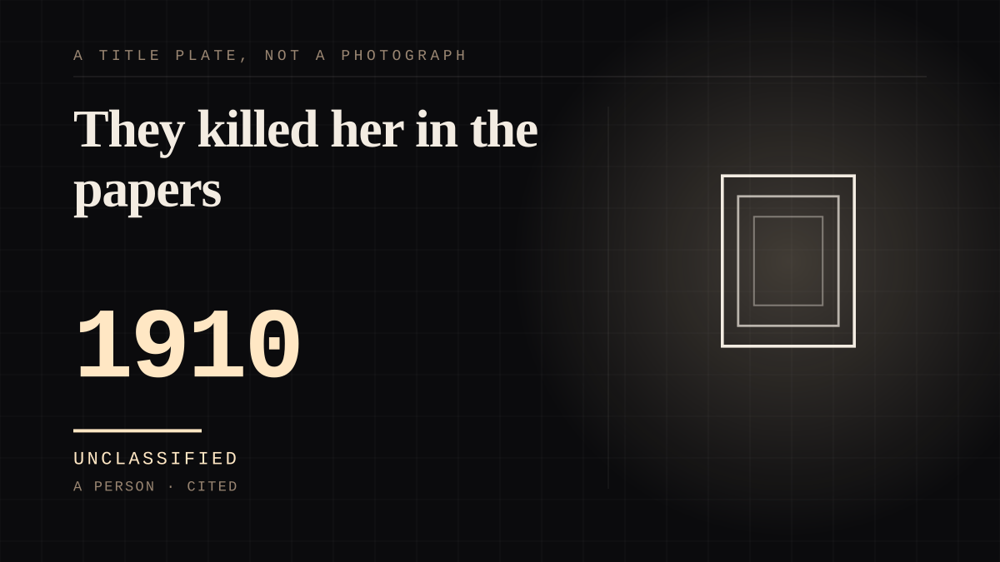

A person · 1910 ·
They killed her in the papers
The Biograph Girl was reported killed under a streetcar, publicly resurrected by the producer who had just hired her, and brought to St. Louis to be mobbed in person - proof that an audience's grief could be produced on schedule.

Nobody knew her name, and the whole stunt was about fixing that. By 1910 Florence Lawrence was the most recognisable face in American pictures after two years of D. W. Griffith's Biograph films, and the audience had no name to put to it, because Biograph refused to credit anybody. When Carl Laemmle hired her away to his new company, IMP, he staged an elaborate ruse to promote his leading lady: a newspaper story in early 1910 that the Biograph Girl had been struck and killed by a streetcar, followed by a full-page advertisement in the industry press headlined 'We Nail a Lie', which blamed rival studios for a deception of Laemmle's own manufacture and announced that not only was Lawrence alive, she would star in IMP's next film. Then he sent her to St. Louis, and the public appearance on 25 March 1910 did the rest. The crowd at Union Station was frantic enough to strip the buttons from her coat; the reporters recorded her reaction - that she had no idea so many people were interested in her, and that it was strange to be greeted by strangers who knew her only from the pictures. The details after that are where the story refuses to hold still. Film historian Eileen Bowser has challenged the one-stunt version of events, and accounts of who started the death rumour do not agree. What the sources do agree on is the machine it left behind: within a year, picture audiences were being sold named performers on purpose, and Lawrence - afterwards widely acclaimed as the first movie star - became the first actor to be credited by name on a motion picture. The audience had grieved a woman it could not name, which was cheap. Naming her was the business.
Where it sits
1900 1900-1949 · 1910 1949
Provenance · 3 source record(s)
- retrievableFired by Biograph with Harry Solter in 1910 and hired by Laemmle's IMP; the widely announced 'death' and the St. Louis appearance of 25 March 1910; the 'We Nail a Lie' advertisement; Eileen Bowser's challenge to the single-stunt account.Brown, Kelly R. 'Florence Lawrence.' Women Film Pioneers Project, Columbia University. ↗
- retrievableThe Union Station scene on 25 March 1910: the crowd stripped the buttons from her coat, and she found it strange that a crowd would gather to welcome someone they had only seen in pictures.Heidenry, Margaret. 'Introducing Florence Lawrence, Hollywood's Forgotten First Movie Star.' Vanity Fair, 25 May 2018. ↗
- retrievableThe February 1910 planted story that the 'Biograph Girl' had been struck and killed by a streetcar; the 'We Nail a Lie' ad blaming rival studios and announcing her next IMP film; the St. Louis public appearance that showed her alive; 'widely acclaimed as the first movie star'; 'the first actor to be credited by name on a motion picture'.Klein, Christopher. 'Florence Lawrence: The First Movie Star.' HISTORY, 7 December 2015. ↗
Connected · 3 out, 0 in
It sits in